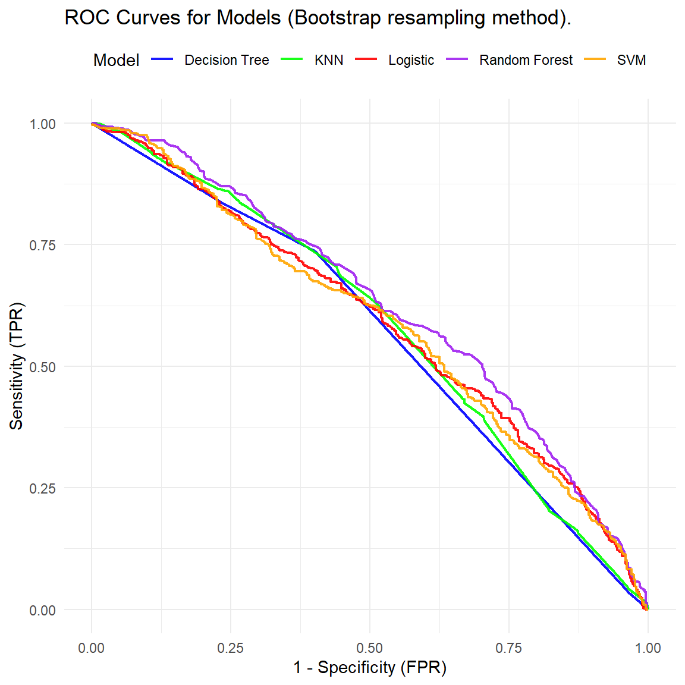

The dataset utilized in this study comprised patient information, including variables pertaining to the frequency of consumption of various food types, beverages, and sociodemographic characteristics. The dependent variable cariesnt is dichotomous, representing the presence or absence of caries with two levels: “Caries-free” and “Caries.” The independent variables encompassed data on dietary habits, consumption of dairy products, sex, age, geographic area, educational level, and other relevant characteristics.
2.2 Dataset splitting
The entire dataset was stratified and divided into two subsets, ensuring that both sets maintained the original proportion of classes in the dependent variable: the training set, comprising 80% of the total data, was employed to train the models. The test set, consisting of 20% of the total data, was reserved for the final evaluation of the models.
2.3 Machine Learning Models
Several Machine Learning models were selected to predict the dichotomous dependent variable (presence or absence of caries) using the following approaches: Logistic regression: Employing a classical approach to binary classification problems. Random forest: A decision-tree-based algorithm that combines multiple trees to enhance accuracy. Support Vector Machines (SVM): A model based on maximizing the classification margin. Decision trees: An algorithm based on recursive partitioning of data (utilizing the partial method). K-Nearest Neighbors (KNN): A distance-based classifier that predicts the class of an observation based on the classes of its nearest neighbors. For each model, 10-fold cross-validation (CV) was applied to the training set. This procedure divides the data into 10 subsets or “folds,” using each fold once as the test set and the other nine as the training set. Cross-validation ensures that each observation is used for both training and testing, allowing for a robust estimation of model performance. Additionally, a bootstrap method was implemented to evaluate the stability of the models. Bootstrap is a sampling technique with replacement, in which multiple subsets of the data (in this case, 100 samples) are generated to train and evaluate the model in each sample. This allows the calculation of performance metrics that are more robust and less dependent on a single partition of data. Bootstrapping was particularly useful for assessing the variance in model performance and the sensitivity of performance to changes in the data.
2.4 Evaluation Metrics
To evaluate the performance of each model on the test set (20% set aside), the following metrics were calculated:
Sensitivity: The proportion of true positives (correct prediction of caries) among all true positives.
Specificity: The proportion of true negatives (correct prediction of caries-free) among all true negatives.
Precision: The proportion of correct predictions (both positive and negative) among all predictions.
Accuracy: The percentage of all correct predictions, i.e., the proportion of cases where the model correctly predicted the class (caries or caries-free).
These metrics were calculated utilizing the confusion matrix for each trained model, both in the cross-validation process and the final test set.
2.5 Model Comparison
The models were compared based on the aforementioned performance metrics to determine which one demonstrated superior accuracy, sensitivity, and specificity. Furthermore, the performance of each model was compared using the area under the Receiver Operating Characteristic (ROC) curve (AUC) to obtain an overall measure of the discriminatory capacity of the models.
3 Results
3.1 Cross Validation with 10 K-fold
Code
# Dividir los datos en conjunto de entrenamiento y prueba (80% entrenamiento, 20% prueba)set.seed(123)train_index <-createDataPartition(select_data$cariesnt, p =0.8, list =FALSE)train_data <- select_data[train_index, ]test_data <- select_data[-train_index, ]# Definir el control de entrenamiento para validación cruzadacontrol <-trainControl(method ="cv", number =10, classProbs =TRUE, summaryFunction = twoClassSummary, returnResamp ="all" )# Modelo 1: Regresión logísticalogistic_model <-train(cariesnt ~ ., data = train_data, method ="glm", family ="binomial", trControl = control, metric ="ROC")# Modelo 2: Random Forestrf_model <-train(cariesnt ~ ., data = train_data, method ="rf", trControl = control, metric ="ROC")# Modelo 3: Support Vector Machine (SVM)svm_model <-train(cariesnt ~ ., data = train_data, method ="svmRadial", trControl = control, metric ="ROC")# Modelo 4: Árbol de decisión con rparttree_model <-train(cariesnt ~ ., data = train_data, method ="rpart", trControl = control, metric ="ROC")# Modelo 5: K-Nearest Neighbors (KNN)knn_model <-train(cariesnt ~ ., data = train_data, method ="knn", trControl = control, metric ="ROC")# Evaluación de los modelos en el conjunto de pruebalogistic_pred <-predict(logistic_model, test_data)rf_pred <-predict(rf_model, test_data)svm_pred <-predict(svm_model, test_data)tree_pred <-predict(tree_model, test_data)knn_pred <-predict(knn_model, test_data)# Calcular las métricas para cada modelologistic_cm <-confusionMatrix(logistic_pred, test_data$cariesnt, positive ="caries")rf_cm <-confusionMatrix(rf_pred, test_data$cariesnt, positive ="caries")svm_cm <-confusionMatrix(svm_pred, test_data$cariesnt, positive ="caries")tree_cm <-confusionMatrix(tree_pred, test_data$cariesnt, positive ="caries")knn_cm <-confusionMatrix(knn_pred, test_data$cariesnt, positive ="caries")# # Mostrar las métricas de evaluación# logistic_cm$byClass # Sensibilidad, Especificidad, Precisión, etc. para la regresión logística# rf_cm$byClass # Sensibilidad, Especificidad, Precisión, etc. para Random Forest# svm_cm$byClass # Sensibilidad, Especificidad, Precisión, etc. para SVM# tree_cm$byClass # Sensibilidad, Especificidad, Precisión, etc. para Árbol de Decisión# knn_cm$byClass # Sensibilidad, Especificidad, Precisión, etc. para KNN
Code
# Modelos en una listamodels <-list(Logistic = logistic_model,"Random Forest"= rf_model,SVM = svm_model,"Decision Tree"= tree_model,KNN = knn_model)# Función para generar predicciones, curvas ROC y AUCget_roc_data <-function(model, test_data, label_col ="cariesnt") { prob <-predict(model, test_data, type ="prob")[, "caries"] roc_curve <-roc(test_data[[label_col]], prob) auc_val <-auc(roc_curve) ci_val <-ci.auc(roc_curve)list(roc = roc_curve, auc = auc_val, ci = ci_val)}# Generar ROC y AUC para todos los modelosroc_results <-lapply(models, get_roc_data, test_data = test_data)# Crear un dataframe con los valores de AUC y su ICauc_data <-data.frame(Model =names(roc_results),AUC =sapply(roc_results, function(x) x$auc),Lower =sapply(roc_results, function(x) x$ci[1]),Upper =sapply(roc_results, function(x) x$ci[3]))# Crear las coordenadas ROC para graficarfpr_seq <-seq(0, 1, length.out =2000)roc_data <-data.frame(FPR =rep(fpr_seq, times =length(models)),TPR =unlist(lapply(roc_results, function(x) coords(x$roc, x = fpr_seq, input ="specificity", ret ="sensitivity"))),Model =rep(names(models), each =length(fpr_seq)))# Graficar las curvas ROCggplot(roc_data, aes(x = FPR, y = TPR, color = Model)) +geom_line(size =0.8, alpha =0.9) +labs(title ="ROC Curves for Models \n(K-fold cross validation resampling method)", x ="1 - Specificity (FPR)", y ="Sensitivity (TPR)") +theme_minimal() +scale_color_manual(values =c("blue", "green", "red", "purple", "orange")) +theme(legend.position ="top")
Code
ggsave("fig1.png", width =6, height =6, dpi =600)
Code
# Crear un dataframe vacío para almacenar las métricasmetrics_data <-data.frame()# Función para calcular IC de proporcionescalc_ci <-function(p, n, z =1.96) { se <-sqrt((p * (1- p)) / n)c(lower = p - z * se, upper = p + z * se)}# Extraer métricas y AUC de cada modelofor (model_name innames(models)) {# Confusion matrix for standard metrics cm <-confusionMatrix(predict(models[[model_name]], test_data), test_data$cariesnt,positive ="caries")# Verificar nombres en cm$byClass para obtener la métrica correcta sensitivity <- cm$byClass["Sensitivity"] specificity <- cm$byClass["Specificity"] precision <- cm$byClass["Precision"] # Precisión es Pos Predictive Value accuracy <- cm$overall["Accuracy"]# Calcular las métricas estándar model_metrics <-data.frame(Model = model_name,Metric =c("Sensitivity", "Specificity", "Precision", "Accuracy"),Value =c(sensitivity, specificity, precision, accuracy),stringsAsFactors =FALSE )# Calcular los IC para las métricas estándar model_metrics$Lower <-sapply(model_metrics$Value, function(x) calc_ci(x, nrow(test_data))[1]) model_metrics$Upper <-sapply(model_metrics$Value, function(x) calc_ci(x, nrow(test_data))[2])# Extraer el AUC para el modelo auc_val <- roc_results[[model_name]]$auc auc_ci <- roc_results[[model_name]]$ci# Agregar el AUC como una métrica auc_metric <-data.frame(Model = model_name,Metric ="AUC",Value = auc_val,Lower = auc_ci[1],Upper = auc_ci[3],stringsAsFactors =FALSE )# Combinar las métricas estándar con el AUC model_metrics <-rbind(model_metrics, auc_metric)# Agregar al dataframe general metrics_data <-rbind(metrics_data, model_metrics)}# Reordenar las métricas en el data framemetrics_data$Metric <-factor(metrics_data$Metric, levels =c("Sensitivity", "Specificity", "Precision", "Accuracy", "AUC"))# Graficar las métricas con el nuevo orden (incluyendo AUC) con IC para cada modelo y valores encimaggplot(metrics_data, aes(x = Metric, y = Value, fill = Model)) +geom_bar(stat ="identity", position =position_dodge(width =0.8), width =0.7,alpha =0.9) +geom_errorbar(aes(ymin = Lower, ymax = Upper), position =position_dodge(width =0.8), width =0.2, color ="black",alpha =0.9) +geom_text(aes(label =round(Value, 3), y = Upper +0.05, color = Model), position =position_dodge(width =0.8), angle =90, vjust =0.5, size =4) +# Valores rotados en 90 grados, justo arriba de los intervalos superioreslabs(title ="Performance Metrics for Models (K-fold cross validation resampling method) \nwith 95% Confidence Intervals",x ="Metric",y ="Proportion (95% CI)") +theme_minimal() +scale_fill_manual(values =c("blue", "green", "red", "purple", "orange")) +scale_color_manual(values =c("blue", "green", "red", "purple", "orange")) +# Asegurando que los colores coincidanylim(0, 1) +theme(legend.position ="top")
# Modelo 4: Árbol de decisión con rparttree_model <-train(cariesnt ~ ., data = train_data, method ="rpart", trControl = control, metric ="ROC")# Modelo 5: K-Nearest Neighbors (KNN)knn_model <-train(cariesnt ~ ., data = train_data, method ="knn", trControl = control, metric ="ROC")# Evaluación de los modelos en el conjunto de pruebalogistic_pred <-predict(logistic_model, test_data)rf_pred <-predict(rf_model, test_data)svm_pred <-predict(svm_model, test_data)tree_pred <-predict(tree_model, test_data)knn_pred <-predict(knn_model, test_data)# Calcular las métricas para cada modelologistic_cm <-confusionMatrix(logistic_pred, test_data$cariesnt, positive ="caries")rf_cm <-confusionMatrix(rf_pred, test_data$cariesnt, positive ="caries")svm_cm <-confusionMatrix(svm_pred, test_data$cariesnt, positive ="caries")tree_cm <-confusionMatrix(tree_pred, test_data$cariesnt, positive ="caries")knn_cm <-confusionMatrix(knn_pred, test_data$cariesnt, positive ="caries")# # Mostrar las métricas de evaluación# logistic_cm$byClass # Sensibilidad, Especificidad, Precisión, etc. para la regresión logística# rf_cm$byClass # Sensibilidad, Especificidad, Precisión, etc. para Random Forest# svm_cm$byClass # Sensibilidad, Especificidad, Precisión, etc. para SVM# tree_cm$byClass # Sensibilidad, Especificidad, Precisión, etc. para Árbol de Decisión# knn_cm$byClass # Sensibilidad, Especificidad, Precisión, etc. para KNN
Code
# Modelos en una listamodels <-list(Logistic = logistic_model,"Random Forest"= rf_model,SVM = svm_model,"Decision Tree"= tree_model,KNN = knn_model)# Función para generar predicciones, curvas ROC y AUCget_roc_data <-function(model, test_data, label_col ="cariesnt") { prob <-predict(model, test_data, type ="prob")[, "caries"] roc_curve <-roc(test_data[[label_col]], prob) auc_val <-auc(roc_curve) ci_val <-ci.auc(roc_curve)list(roc = roc_curve, auc = auc_val, ci = ci_val)}# Generar ROC y AUC para todos los modelosroc_results <-lapply(models, get_roc_data, test_data = test_data)# Crear un dataframe con los valores de AUC y su ICauc_data <-data.frame(Model =names(roc_results),AUC =sapply(roc_results, function(x) x$auc),Lower =sapply(roc_results, function(x) x$ci[1]),Upper =sapply(roc_results, function(x) x$ci[3]))# Crear las coordenadas ROC para graficarfpr_seq <-seq(0, 1, length.out =2000)roc_data <-data.frame(FPR =rep(fpr_seq, times =length(models)),TPR =unlist(lapply(roc_results, function(x) coords(x$roc, x = fpr_seq, input ="specificity", ret ="sensitivity"))),Model =rep(names(models), each =length(fpr_seq)))# Graficar las curvas ROCggplot(roc_data, aes(x = FPR, y = TPR, color = Model)) +geom_line(size =0.8, alpha =0.9) +labs(title ="ROC Curves for Models (Bootstrap resampling method).", x ="1 - Specificity (FPR)", y ="Sensitivity (TPR)") +theme_minimal() +scale_color_manual(values =c("blue", "green", "red", "purple", "orange")) +theme(legend.position ="top")

Code
ggsave("fig3.png", width =6, height =6, dpi =800)
Code
# Crear un dataframe vacío para almacenar las métricasmetrics_data <-data.frame()# Función para calcular IC de proporcionescalc_ci <-function(p, n, z =1.96) { se <-sqrt((p * (1- p)) / n)c(lower = p - z * se, upper = p + z * se)}# Extraer métricas y AUC de cada modelofor (model_name innames(models)) {# Confusion matrix for standard metrics cm <-confusionMatrix(predict(models[[model_name]], test_data), test_data$cariesnt,positive ="caries")# Verificar nombres en cm$byClass para obtener la métrica correcta sensitivity <- cm$byClass["Sensitivity"] specificity <- cm$byClass["Specificity"] precision <- cm$byClass["Precision"] # Precisión es Pos Predictive Value accuracy <- cm$overall["Accuracy"]# Calcular las métricas estándar model_metrics <-data.frame(Model = model_name,Metric =c("Sensitivity", "Specificity", "Precision", "Accuracy"),Value =c(sensitivity, specificity, precision, accuracy),stringsAsFactors =FALSE )# Calcular los IC para las métricas estándar model_metrics$Lower <-sapply(model_metrics$Value, function(x) calc_ci(x, nrow(test_data))[1]) model_metrics$Upper <-sapply(model_metrics$Value, function(x) calc_ci(x, nrow(test_data))[2])# Extraer el AUC para el modelo auc_val <- roc_results[[model_name]]$auc auc_ci <- roc_results[[model_name]]$ci# Agregar el AUC como una métrica auc_metric <-data.frame(Model = model_name,Metric ="AUC",Value = auc_val,Lower = auc_ci[1],Upper = auc_ci[3],stringsAsFactors =FALSE )# Combinar las métricas estándar con el AUC model_metrics <-rbind(model_metrics, auc_metric)# Agregar al dataframe general metrics_data <-rbind(metrics_data, model_metrics)}# Reordenar las métricas en el data framemetrics_data$Metric <-factor(metrics_data$Metric, levels =c("Sensitivity", "Specificity", "Precision", "Accuracy", "AUC"))# Graficar las métricas con el nuevo orden (incluyendo AUC) con IC para cada modelo y valores encimaggplot(metrics_data, aes(x = Metric, y = Value, fill = Model)) +geom_bar(stat ="identity", position =position_dodge(width =0.8), width =0.7,alpha =0.9) +geom_errorbar(aes(ymin = Lower, ymax = Upper), position =position_dodge(width =0.8), width =0.2, color ="black",alpha =0.9) +geom_text(aes(label =round(Value, 3), y = Upper +0.05, color = Model), position =position_dodge(width =0.8), angle =90, vjust =0.5, size =4) +# Valores rotados en 90 grados, justo arriba de los intervalos superioreslabs(title ="Performance Metrics for Models (Bootstrap resampling method) \nwith 95% Confidence Intervals",x ="Metric",y ="Proportion (95% CI)") +theme_minimal() +scale_fill_manual(values =c("blue", "green", "red", "purple", "orange")) +scale_color_manual(values =c("blue", "green", "red", "purple", "orange")) +# Asegurando que los colores coincidanylim(0, 1) +theme(legend.position ="top")
![]()